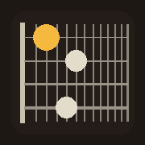
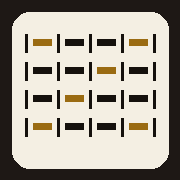

Bass
tools
6-string · B E A D G C

Fretboard
Scales, chords and arpeggios across the neck, with a metronome.

The Book
Charts with live transpose, Nashville numbers and auto-scroll.
Add either one to the Home Screen from Safari and it opens full screen like an app. Both run offline once loaded.